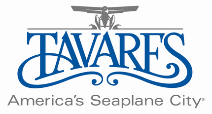

Tavares homepage: Click here
History
HistoryThe city was founded by newspaper and railroad man Alexander St. Clair-Abrams in 1880 and named for a Portuguese ancestor. While St. Clair-Abrams did not achieve his dream that Tavares become the state capital of Florida (Tallahassee has held the spot since 1823), in 1887 the city was named the seat of Lake County. St. Clair-Abrams later chartered a railroad to run from Tavares to Orlando.
Geography
Tavares is located at 28°48′6″N 81°44′1″W (28.801670, -81.733548) According to the United States Census Bureau, the city has a total area of 7.4 square miles (19 km2); of this, 7.1 square miles (18 km2) (95.16%) is land and 0.4 square miles (1.0 km2) (4.84%) is water.
Demographics
As of the census of 2000, there were 9,700 people, 4,471 households, and 2,821 families residing in the city. The population density was 1,368.3 inhabitants per square mile (528.2/km2). There were 5,475 housing units at an average density of 772.3 per square mile (298.2/km2). The racial makeup of the city was 88.98% White, 7.70% African American, 0.30% Native American, 0.80% Asian, 0.07% Pacific Islander, 1.04% from other races, and 1.10% from two or more races. Hispanic or Latino of any race were 3.46% of the population.
There were 4,471 households out of which 16.1% had children under the age of 18 living with them, 51.8% were married couples living together, 9.3% had a female householder with no husband present, and 36.9% were non-families. 33.0% of all households were made up of individuals and 21.2% had someone living alone who was 65 years of age or older. The average household size was 2.01 and the average family size was 2.48.
In the city the population was spread out with 14.1% under the age of 18, 5.8% from 18 to 24, 19.8% from 25 to 44, 22.2% from 45 to 64, and 38.0% who were 65 years of age or older. The median age was 56 years. For every 100 females there were 92.8 males. For every 100 females age 18 and over, there were 90.9 males.
The median income for a household in the city was $31,337, and the median income for a family was $36,243. Males had a median income of $28,911 versus $20,271 for females. The per capita income for the city was $19,942. About 6.6% of families and 10.3% of the population were below the poverty line, including 18.2% of those under age 18 and 6.9% of those age 65 or over.
| Month | Date | Event |
|---|---|---|
| January | 18 - 19 | Classic Raceboat Regatta - Winter Thunder |
| 24 - 25 | CrappieMasters Tournament | |
| February | 1 | African American Heritage Festival |
| 16 | Florida Waterman Hospital 5K Run | |
| March | 1 - 2 | Hydro Drag JetSki Nationals |
| 22 - 23 | Classic Raceboat Regatta - Spring Thunder | |
| 28 - 30 | Sunnyland Antique & Classic Boat Show | |
| April | 4 - 5 | Dragonboat Race |
| 12 | Planes, Trains & BBQ | |
| 26 | Tavares Spring Seaplane Fly-in & 100 Years of Seaplanes Celebration | |
| May | 31 | Pro Hydro-X JetSki Tour |
| June | 1 | Pro-Hydro-X JetSki Tour |
| July | 4 | 4th of July Celebration |
| August | 30 - 31 | Hydro Drag World Championship |
| September | 26 - 28 | Rifles, Rails & History |
| October | 25 | Monster Splash Seaplane Fly-in |
| 25 - 26 | Howl-O-Fest presented by Tavares Chamber of Commerce | |
| December | 6 | Christmas Parade & Celebration |
Construction Projects
The following is a list of the City's major construction projects. By clicking on the links you will find in-depth information on each project such as contracts, timelines, artist renderings, construction updates, construction photos and financial information. More information will be added as the projects move forward through construction and completion.